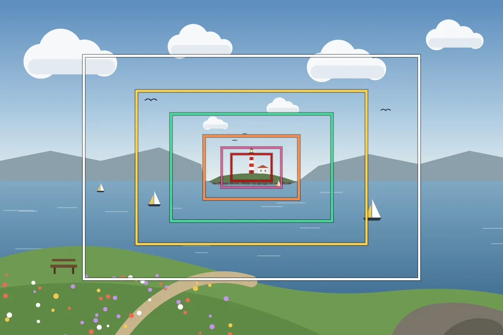
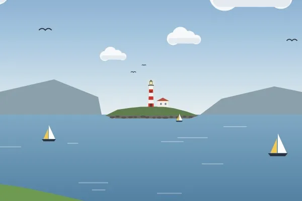
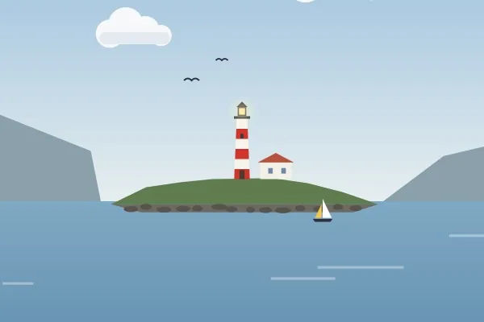
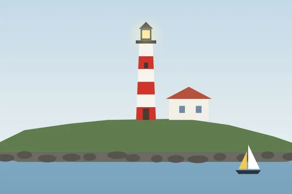
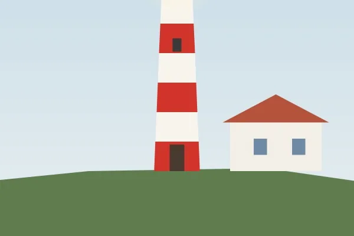

The focal length of a lens, measured in millimetres, describes how much of the scene it takes in and how big distant things look. A short focal length gives a wide view. A long one gives a narrow, magnified view. Zoom lenses cover a range, such as 24–70 mm. Prime lenses have a single focal length, like 50 mm, and they’re usually smaller and brighter for the money.
Same spot, different lens

- 16 mm 107°
- 24 mm 84°
- 35 mm 63°
- 50 mm 47°
- 85 mm 29°
- 135 mm 18°
- 200 mm 12°
Every view in the picture of the bay was taken from the same spot. Each coloured frame shows what a longer lens would capture. At 24 mm you see most of the bay, and at 200 mm the lighthouse fills the frame. The angle of view shrinks as the focal length grows, from 107° at 16 mm down to just 12° at 200 mm, measured across the diagonal of a full-frame sensor. A phone’s main camera sees roughly what a 24–26 mm lens does.
Distance changes the background
People often say wide-angle lenses distort and telephoto lenses compress. Strictly speaking, perspective depends only on where you stand. But you stand in different places with different lenses, so the effect is very real. To fill the frame with a person on a wide lens you have to get close, and then the background looks small and far away. With a long lens you step back for the same framing, and the background looks much bigger and closer behind them. That’s the classic compressed look. A long lens also shows a narrower slice of background, which is easier to keep simple, and at the same aperture it blurs that background more.
That’s why lenses from 85 to 135 mm are so popular for portraits. From a comfortable distance they give faces natural proportions and a soft, uncluttered background. A wide lens close to a face makes the nose bigger and the ears smaller, which is rarely flattering.
Lens families
Ultra-wide 10–20 mm
A huge angle of view for big skies and tight interiors. Get close to something in the foreground or the picture will look empty. Keep the camera level so buildings don’t lean inwards.

Wide 24–35 mm
The classic range for landscapes and street photography, and the natural view of most phone cameras. Wide enough to show context, close enough to stay natural.

Standard 40–60 mm
Roughly matches the way we take in a scene, so pictures look natural and honest. A fast 50 mm prime at f/1.8 is small and sharp, and it doesn’t cost much. It makes an excellent first extra lens.

Portrait 85–135 mm
Flattering perspective for faces and a soft, simple background. Also good for picking out details in a landscape.

Telephoto 200 mm and up
Brings distant subjects close, like wildlife or sport. Every wobble is magnified too, so use a fast shutter speed or a tripod.
Maximum aperture
Every lens has a widest aperture, printed on the barrel as a number such as f/1.8 or f/2.8. Lenses with a wide maximum aperture are called fast, because they let you use faster shutter speeds in low light. They also give shallower depth of field. Many zooms have a maximum aperture that changes as you zoom, for example f/3.5 at the wide end and f/5.6 at the long end. Fast primes and constant-aperture zooms cost more, but they make a real difference indoors and at night.
Zooms and primes
A zoom gives you lots of framings without changing lenses, which is handy when you’re travelling or can’t get closer. A prime has one focal length, and that limit is part of its charm. With a prime you walk more and look harder. Many photographers carry one standard zoom and one fast prime, and that pair covers a surprising amount of ground.
Smaller sensors
The focal lengths in this book are for full-frame cameras, whose sensor measures 36 × 24 mm. A smaller sensor only sees the middle of the image the lens projects, so every lens behaves like a longer one. To compare, multiply by the crop factor. That’s about 1.5 or 1.6 for APS-C sensors and 2 for Micro Four Thirds. A 35 mm lens on an APS-C camera frames much like a 50 mm lens on full frame. Phones usually quote their equivalent focal lengths directly.
Exercises
Exercises F1–F4. Tick each one off when you’ve tried it. Your ticks stay on this phone or computer.
- F1
Same spot
Stand in one place and photograph the same view at every focal length you have, widest to longest. Lay the pictures side by side.
- F2
Same framing
Photograph a friend’s head and shoulders at your widest focal length from close up. Then do it at your longest from far back, keeping them the same size. Compare the background and the face.
- F3
One lens for a week
Use a single focal length for a whole week, or leave your zoom at 35 or 50 mm. Move your feet instead of zooming.
- F4
Your phone in camera terms
Photograph a scene with your phone’s main camera, then try to match the framing with your zoom. Note the focal length that matches. Now you know your phone’s lens in camera terms.
Photography Handbook, © 2026 Samskara Photo Club. Text and illustrations are licensed under CC BY-NC-SA 4.0. You may share and adapt them for non-commercial use if you credit the club and share your version under the same licence. Commercial use needs the club’s permission. The club logo is not covered by the licence.